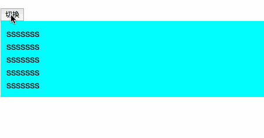
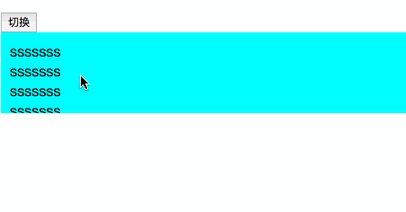

项目中发现同事使用了element-ui的el-collapse-transition来做折叠展开效果，打开源码看了下发现挺有意思，来解析学习一番。
el-collapse-transition的引入方式
- // fade/zoom 等
- import 'element-ui/lib/theme-chalk/base.css';
- // collapse 展开折叠
- import CollapseTransition from 'element-ui/lib/transitions/collapse-transition';
- import Vue from 'vue'
-
- Vue.component(CollapseTransition.name, CollapseTransition)
使用方式
- <template>
- <div>
- <div><button @click="cb">切换</button></div>
- <el-collapse-transition>
- <div v-if="show" class="testshow">
- <div>sssssss</div>
- <div>sssssss</div>
- <div>sssssss</div>
- <div>sssssss</div>
- <div>sssssss</div>
- </div>
- </el-collapse-transition>
- </div>
- </template>
-
- <script>
- export default {
- data: () => ({
- show: true
- }),
- methods: {
- cb() {
- this.show = !this.show;
- },
- }
- }
- </script>
- <style lang="less">
- .testshow{
- padding: 10px 10px;
- background-color: aqua;
- }
- <style>
效果，v-if和v-show都可以
下面来解析一下源码的实现
el-collapse-transition写在js文件中，源码路径element-dev/src/transitions/collapse-transition.js
核心的实现方式是通过vue的函数式组件的方式实现的，如下代码
- export default {
- name: 'ElCollapseTransition',
- functional: true,
- render(h, { children }) {
- const data = {
- on: new Transition()
- };
-
- return h('transition', data, children);
- }
- };
看到此处代码可以得出，实现的原理就是生成一个<transition>标签，通过vue的<transition>来实现折叠动画效果。
return h('transition', data, children);这里用到了data对象，里面绑定了事件，on后面的是一个Transition类的实例
- class Transition {
- beforeEnter(el) {
- addClass(el, 'collapse-transition');
- if (!el.dataset) el.dataset = {};
-
- el.dataset.oldPaddingTop = el.style.paddingTop;
- el.dataset.oldPaddingBottom = el.style.paddingBottom;
-
- el.style.height = '0';
- el.style.paddingTop = 0;
- el.style.paddingBottom = 0;
- }
-
- enter(el) {
- el.dataset.oldOverflow = el.style.overflow;
- if (el.scrollHeight !== 0) {
- el.style.height = el.scrollHeight + 'px';
- el.style.paddingTop = el.dataset.oldPaddingTop;
- el.style.paddingBottom = el.dataset.oldPaddingBottom;
- } else {
- el.style.height = '';
- el.style.paddingTop = el.dataset.oldPaddingTop;
- el.style.paddingBottom = el.dataset.oldPaddingBottom;
- }
-
- el.style.overflow = 'hidden';
- }
-
- afterEnter(el) {
- // for safari: remove class then reset height is necessary
- removeClass(el, 'collapse-transition');
- el.style.height = '';
- el.style.overflow = el.dataset.oldOverflow;
- }
-
- beforeLeave(el) {
- if (!el.dataset) el.dataset = {};
- el.dataset.oldPaddingTop = el.style.paddingTop;
- el.dataset.oldPaddingBottom = el.style.paddingBottom;
- el.dataset.oldOverflow = el.style.overflow;
-
- el.style.height = el.scrollHeight + 'px';
- el.style.overflow = 'hidden';
- }
-
- leave(el) {
- if (el.scrollHeight !== 0) {
- // for safari: add class after set height, or it will jump to zero height suddenly, weired
- addClass(el, 'collapse-transition');
- el.style.height = 0;
- el.style.paddingTop = 0;
- el.style.paddingBottom = 0;
- }
- }
-
- afterLeave(el) {
- removeClass(el, 'collapse-transition');
- el.style.height = '';
- el.style.overflow = el.dataset.oldOverflow;
- el.style.paddingTop = el.dataset.oldPaddingTop;
- el.style.paddingBottom = el.dataset.oldPaddingBottom;
- }
- }
这个Transition类里面封装的其实就是<transition>的钩子函数
- <transition
- v-on:before-enter="beforeEnter"
- v-on:enter="enter"
- v-on:after-enter="afterEnter"
- v-on:enter-cancelled="enterCancelled"
-
- v-on:before-leave="beforeLeave"
- v-on:leave="leave"
- v-on:after-leave="afterLeave"
- v-on:leave-cancelled="leaveCancelled"
- >
- <!-- ... -->
- </transition>
所以实现原理就很清晰了，通过<transition>组件上的javascript钩子来实现动画效果，那我们来具体看看钩子里面的函数执行了什么就可以了
this.show 从false切换到true，触发的钩子是before-enter="beforeEnter"、enter="enter"、after-enter="afterEnter"
before-enter钩子会被第一个触发，执行beforeEnter代码，这里的el元素就是class=testshow这个div容器，下面统一称作容器元素
- beforeEnter(el) {
- addClass(el, 'collapse-transition');
- if (!el.dataset) el.dataset = {};
-
- el.dataset.oldPaddingTop = el.style.paddingTop;
- el.dataset.oldPaddingBottom = el.style.paddingBottom;
-
- el.style.height = '0';
- el.style.paddingTop = 0;
- el.style.paddingBottom = 0;
- }
beforeEnter方法中，首先给容器元素添加collapse-transition类，这个类的样式是
- .collapse-transition {
- transition: 0.3s height ease-in-out, 0.3s padding-top ease-in-out, 0.3s padding-bottom ease-in-out;
- }
添加这个样式之后，当改变height padding-top padding-bottom时会按照上述代码出现效果
js代码紧接着在容器元素上创建自定义属性，将容器元素原有的padding-top和padding-bottom值存到相对应的自定义属性中。
然后，将容器元素的height padding-top padding-bottom置为0
before-enter钩子执行完之后，进入enter钩子执行，这时如果在即将执行enter方法第一句代码打上断点的话，可以发现在执行enter钩子时，在vue中已经将容器元素中包裹的内容显示出来，然后我们看一下enter方法的代码是怎么处理的
- enter(el) {
- el.dataset.oldOverflow = el.style.overflow;
- if (el.scrollHeight !== 0) {
- el.style.height = el.scrollHeight + 'px';
- el.style.paddingTop = el.dataset.oldPaddingTop;
- el.style.paddingBottom = el.dataset.oldPaddingBottom;
- } else {
- el.style.height = '';
- el.style.paddingTop = el.dataset.oldPaddingTop;
- el.style.paddingBottom = el.dataset.oldPaddingBottom;
- }
-
- el.style.overflow = 'hidden';
- }
enter方法首先将容器元素的overflow属性值存到相对应的自定义属性之中，然后恢复height padding-top padding-bottom的值。height的值使用scrollHeight恢复（后面讲解为啥用scrollHeight），将存在自定义属性中的padding-top和padding-bottom值拿出来恢复。然后将容器元素的overflow置为hidden。置为hidden是因为，如果不置为hidden，那么容器元素中的内容就会立刻显示出来，而此时容器元素的高度和padding是按照0.3秒的动效慢慢展开，那么就会是下图效果，所以要先隐藏内容，随着容器的慢慢展开而出现内容。

展开的过程，最后执行afterEnter方法
- afterEnter(el) {
- // for safari: remove class then reset height is necessary
- removeClass(el, "collapse-transition");
- el.style.height = "";
- el.style.overflow = el.dataset.oldOverflow;
- },
这个方法，将collapse-transition类删除掉，将overflow恢复为容器元素本来的状态,将height置为'',其实就是相当于auto。
看到这里也就是要注意，容器元素的高度不要用内联样式，否则会被覆盖掉。
上面说的为什么用scrollHeight来恢复height的值？
因为在没有滚动条的时候scrollHeight的值和clientHeight的值相等，也就是等于padding-box的值,height = scrollHeight赋值的位置，padding值还为0，所以获取的是准确的height值，拿去恢复height的值刚刚好。但是，如果容器元素的height小于包含的内容的高度，有滚动条的话，scrollHeight高度超过height原值，尽管afterEnter中的代码会把height恢复为auto，还是会出问题，如下图
- .testshow{
- padding: 10px 10px;
- background-color: aqua;
- height: 70px;
- overflow: auto;
- }
解决这个问题的方法就是，在现在这个元素容器外面再套一层新的容器元素
- <div v-show="showdiv">
- <div class="testshow">
- <div>sssssss</div>
- <div>sssssss</div>
- <div>sssssss</div>
- <div>sssssss</div>
- <div>sssssss</div>
- </div>
- </div>
这样就解决了，如下图

也就是说，使用这个组件实现折叠展开效果，放在组件里面的内容的容器元素，尽量不要添加height overflow这种样式，就可以不出现这些问题了。
this.show 从true到false就是逆过程，就不用单独分析了。
以上就是我对el-collapse-transition组件的解析学习，还是有挺多收获的。


 1202
1202